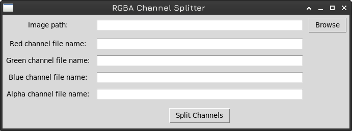

General Manual for 3D Models
Version 1.0 20/01/2024
Braulio Madrid
Descargar PDF- Introduction
- Technical Specifications
- Model Installation
- Model Structure
- Model Manipulation and Usage
- Material Setup
- Texture Manipilation
- Troubleshooting
- License and Restrictions
- Frequently Asked Questions (FAQ)
- Additional files
- Contact
Introduction
Key Points:
- 3D models optimized for maximum performance on mobile devices and VR.
- Texture atlas system that significantly reduces resource consumption.
- Designed to maintain high visual quality with minimal performance impact.
- Ideal for games requiring 90+ FPS.
Our products offer a specialized solution for developers seeking to balance visual quality and performance. Each model is meticulously optimized to function efficiently on mobile devices, VR systems, and low-resource hardware without compromising the visual quality of your project.
Texture Atlas System
Our texture atlas system provides multiple advantages:
- Improved Performance: Significant reduction in draw calls.
- Memory Efficiency: Optimized VRAM usage.
- Flexibility: Individual manipulation of meshes while maintaining efficiency.
- Simplicity: A single shared material reduces project complexity.
Ideal Use Cases
- VR/AR: Applications requiring 90+ FPS for a smooth experience.
- Mobile Games: Projects needing broad compatibility with devices.
- E-Sports: Titles demanding high performance (100+ FPS).
- WebGL: Browser-based 3D applications.
Important Note:
Each product includes a specific manual with detailed implementation and optimization instructions for its particular use case. This general manual provides an overview of our modeling system and best practices for its use.
Technical Specifications
Formats and Compatibility
Formato Principal
- .blend: Editable and compatible with major engines.
Formatos Adicionales
- .obj/.gltf: Optimized for web.
- .fbx: Compatible with major engines.
Technical Limitations
- Maximum 5,000 vertices per mesh.
- Limit of 64 meshes per product.
- Maximum texture resolution: 4096 × 4096 pixels.
- Metric units (meters).
Texture System
| Base Textures (Mandatory) | Additional Textures (Optional) |
|---|---|
| Albedo: Base color and opacity. | AO: Ambient occlusion. |
| Normal: Relief information. | Specular: Reflections (grayscale). |
| Roughness: Surface roughness. | Translucency: Translucency (grayscale). |
| Self-Illumination: Self-illumination. |
Texture Optimization
- Format: PNG with alpha support.
- Dimensions: 1024², 2048², 4096²
- Combined Channels: r-rough-b-ao format for optimization.
- Recommended Compression: ASTC (primary), ETC2 (alternative).
Engine Compatibility
- Unity 2018+
- Unreal Engine 4+
- Godot 4+
- API Requirement: OpenGL 3+ or Vulkan
Model Installation
Model Installation Guide
Most game engines are compatible with files exported from Blender. However, some engines interpret axis orientation differently. By default, all models are configured with the Z-axis pointing up, but in certain engines, such as Unity, the Y-axis points up. To address this discrepancy, you can:
- Rotate the models 90° on the Y-axis in Blender before exporting.
- Use formats such as .glb or .fbx, which generally adjust this mismatch automatically.
Material Setup
Although engines are compatible with Blender, the fidelity of materials is often affected during import. Most engines assign a default PBR (Physically Based Rendering) material and approximately map the textures. To optimize materials:
- The texture r-rough-b-ao.png combines roughness information in the red channel (Roughness) and ambient occlusion in the blue channel (Ambient Occlusion).
- You may need to configure a custom shader to correctly interpret these data.
- The additional files package includes a GLSL shader compatible with Blender, which can serve as a base for designing a custom shader in your preferred engine.
Texture Atlas Setup
Some engines, such as Unreal Engine, allow combining multiple textures into a large Texture Atlas of up to 8192x8192 pixels. If your engine supports this feature, you can use it to manage textures more efficiently. However:
- Most engines do not support this feature automatically, which may require manual adjustments.
- The models are already designed with an optimized Texture Atlas, so additional configuration is generally unnecessary.
Model Structure
Model Hierarchy
Each product is delivered as a single file in a specific format (.blend, .fbx, .obj, .glb, etc.), containing multiple optimized meshes. These meshes share a single texture to ensure efficiency and compatibility. Key features include:
- Uniform Scale: All meshes have a scale of 1.0 on each axis.
- Standard Rotation: Rotations are set to 0.0 to prevent inconsistencies during import.
- Metric Units: Models are configured in meters to align with the International System of Units (SI).
If the model is designed to include animations, movable parts are separated from static parts to simplify manipulation. Most products do not include preconfigured bones or animations unless explicitly specified. For further details, consult the model-specific manual.
Texture Atlas Usage
Meshes utilize an optimized Texture Atlas to maximize texture area usage and minimize graphical load. The UV maps are configured with the following features:
- Efficient Distribution: UV islands are proportioned to match the model size, ensuring uniform resolution across all meshes.
- Minimal Stretching: UV cuts are designed to capture maximum detail without noticeable distortions.
his approach, however, has a limitation: separating meshes to apply individual textures can be challenging. In such cases, you may need to bake textures into a new UV map.
Model Handling and Usage
Object Positioning
Meshes are designed with the pivot located at the base of the model to facilitate placement on flat surfaces. For irregular objects that may be thrown or physically manipulated, the pivot is positioned at their center of mass to ensure more intuitive handling within the game engine.
Additionally, meshes are configured with standardized dimensions proportional to real-world objects, reducing the need for scaling adjustments in most cases. This modularity simplifies integration into various scenarios.
Animation Application
By default, most models do not include predefined animations. If animations are available, detailed instructions are provided in the product-specific manual included with the package.
Interaction with Engine Scripts and Physics
Most models are designed as static objects with no complex hierarchies, simplifying interaction with physics systems and game scripts. However, some models may feature additional functionalities, such as data stored in vertex colors. In such cases, additional files will be included to support these features:
- Examples of use through specific scripts.
- Shaders leveraging features like wind-based movement using vertex colors.
- Links to web demonstrations illustrating their functionality.
3D Model Material Configuration
This model pack includes a data texture named `r-rough-b-ao.png`, which combines roughness, ambient occlusion, and other properties into separate channels. The purpose of this texture is to save GPU VRAM, but it requires additional configuration. Specifically, you need to create a shader that separates the channels and applies the values to the corresponding material properties.
Inside the ZIP file, you'll find a file named `PBR-shader-for-data-texture.GLSL`, which serves as an example implementation of the data texture applied to the material. This file is designed for Godot 4, but you can modify it to work with Unity 3D or use it as pseudo-code for Unreal Engine.
Shader Explanation
shader_type spatial;
// Texturas
uniform sampler2D albedo_texture : hint_albedo;
uniform sampler2D normal_texture : hint_normal;
uniform sampler2D data_texture; // Roughness (R), Displace (G), AO (B), Translucency (A)
// Parámetros ajustables
uniform float roughness_scale : hint_range(0, 1) = 1.0;
uniform float displace_scale : hint_range(0, 1) = 1.0;
uniform float ao_scale : hint_range(0, 1) = 1.0;
uniform float translucency_scale : hint_range(0, 1) = 1.0;
void fragment() {
// Get values from textures
vec4 albedo_color = texture(albedo_texture, UV);
vec3 normal_map = texture(normal_texture, UV).rgb;
vec4 data = texture(data_texture, UV);
// Split channels from data texture
float roughness = data.r * roughness_scale;
float displace = data.g * displace_scale;
float ao = data.b * ao_scale;
float translucency = data.a * translucency_scale;
// Apply values to PBR
ALBEDO = albedo_color.rgb;
NORMAL_MAP = normal_map;
ROUGHNESS = roughness;
METALLIC = 0.0; // Set the metalness
AO = ao;
TRANSLUCENCY = translucency;
// Opcional: Aplicar el desplazamiento (displace)
// Esto depende de cómo quieras usar el desplazamiento en tu shader
// Por ejemplo, podrías modificar la posición del vértice en el vertex shader.
}
1. Textures:
- albedo_texture: Base color texture (Albedo).
- normal_texture: Normal map for surface detail.
- data_texture: Combines Roughness (Red), Displace (Green), AO (Blue), and Translucency (Alpha).
2. Separated Channels:
- data.r: Roughness
- data.g: Displace (not directly used in this fragment shader)
- data.b: Ambient Occlusion
- data.a: Translucency
3. Adjustable Parameters:
- roughness_scale: Adjusts the intensity of the roughness channel.
- displace_scale: Adjusts the intensity of the displace channel (not used in this fragment shader).
- ao_scale: Adjusts the intensity of the ambient occlusion channel.
- translucency_scale: Adjusts the intensity of the translucency channel.
4. Shader Outputs:
- ALBEDO: Base color of the material.
- NORMAL_MAP: Normals for surface detail.
- ROUGHNESS: Controls material roughness.
- METALLIC: Controls metallicity (disabled in this case).
- AO: Ambient occlusion for more realistic shadows.
- TRANSLUCENCY: Controls material translucency.
Additional Notes:
- If you need to use translucency, you can apply it in the vertex shader to modify vertex positions based on the alpha channel value.
- Ensure that the textures are correctly configured in Godot's material settings (e.g., sRGB for Albedo and non-sRGB for Roughness, Normal, etc.).
- You can adjust the values of `roughness_scale`, `displace_scale`, `ao_scale`, and `translucency_scale` directly in Godot's inspector to customize the effect.
Texture Separation
What if I Don’t Know How to Program Shaders
Another option is to manually separate the channels of the `r-rough-b-ao.png` texture into individual textures. If you're not familiar with programming, you can use image editing software like GIMP or Photoshop to do this.
If you're comfortable with programming, you can run a script included in the ZIP file named `channel_splitter.py` to automatically separate the channels into individual textures.
How to Use `channel_splitter.py`
Requirements:
You need to install the `Pillow` library, which is used for image processing, by running the following command:
pip install pillow
GUI Execution:
After installing the dependency, simply run the script with the following command:
python3 channel_splitter.py
On Linux, you can execute it with:
./channel_splitter.py
The script will open a graphical interface where you can select the input image and the channels to split.
Command-Line Execution:
Using arguments can facilitate automation if you plan to separate channels from multiple data textures. The command structure is as follows:
python3 script.py -i input_image.png -r red.png -g green.png -b blue.png -a alpha.png
Here’s a practical example:
python3 script.py -i texture.png -r roughness.png -g displace.png -b ao.png -a translucency.png
Arguments:
The script accepts the following arguments:
-i, --input: Input image file.
-r, --red: Red channel output image file.
-g, --green: Green channel output image file.
-b, --blue: Blue channel output image file.
-a, --alpha: Alpha channel output image file.
Note: The -i parameter is mandatory to load the data texture, while the -r, -g, -b, -a parameters are optional, but at least one must be used.
Lose the Script?
If you lose the script, you can find a copy in the following GitHub repository: under the `texture-ops` folder. This folder contains various scripts related to texture operations for 3D models.
Troubleshooting
Misaligned Uvs
If UVs are not properly assigned, open Blender and check the number of UV maps in the mesh section. It is possible that more than one UV map was mistakenly included. Simply delete the one that doesn't work. Note that stores typically review the content to ensure functionality before publication.
Textures Not Displaying Correctly
Default textures are located in the same directory as the main file. If the file was accidentally moved to a different location, reassign the textures to their new location within the material settings.
Compression Quality Loss
The product textures are provided in uncompressed PNG format so users can apply compression based on their needs. If compression issues occur, use a format that supports lossless compression and ensure reasonable compression values to maintain quality.
License and Restrictions
Standard Fab.com License
Rights:
- Personal Use: Products may be used for personal, non-commercial purposes. This includes use at home or in private projects.
- Digital Access: If the product includes digital content (such as downloadable files), the purchaser may download and use such content as stipulated in the terms.
- Ownership of Physical Item: If the product is physical, the purchaser owns that item but not the copyright or design rights.
Limitations:
- Prohibition of Commercial Resale: Products may not be resold for commercial purposes without prior authorization.
- No Modification or Reproduction: Modifying, copying, or reproducing the product's design or digital content for distribution or commercial use is not permitted.
- Non-Transferable License: The rights associated with the license cannot be transferred to another person.
Frequently Asked Questions (FAQ)
Why do the models use a texture atlas instead of individual textures?
The texture atlas significantly reduces draw calls and optimizes GPU memory usage. This improves performance on mobile and VR devices, allowing for high FPS without sacrificing visual quality.
What should I do if the model appears rotated when importing it?
This is a common issue due to different axis configurations in engines. You can fix it by rotating the model 90 degrees on the Y-axis or using .glb/.fbx formats, which typically handle this situation better.
How do I handle textures that combine multiple data in their RGB channels?
Use a custom shader to separate the channels. For example, for a texture like r-rough-b-ao.png, extract roughness from the red channel and ambient occlusion from the blue channel. Example GLSL shaders can be found in the additional files.
Can I modify the UVs to use individual textures?
It is possible but not recommended. It would require redoing the UV mapping and baking new textures, which could result in quality loss and eliminate the optimization benefits of the texture atlas.
What texture compression format should I use?
ASTC is recommended for most modern mobile devices. If you encounter compatibility issues, use ETC2 as an alternative.
Why are textures limited to 4096x4096?
This limit ensures compatibility with most mobile devices and engines while maintaining a good balance between visual quality and performance. Larger textures could cause issues on modest hardware.
Can I use these models in high-resolution games (4K/8K)?
They are not recommended for close-up views in 4K/8K. However, they work well in 1080p or for distant views, such as in RTS games, even at higher resolutions.
Is it possible to further reduce the polygon count of the models?
The models are already optimized with a limit of 5000 vertices. Further reduction would likely visibly degrade the quality of the mesh.
Additional Files
System Requirements
Minimum Hardware
| Component | Development | Final Device |
|---|---|---|
| CPU | 4 cores | 2 cores |
| RAM | 8GB | 2GB |
| GPU | 2GB VRAM | 1GB VRAM |
| Storage | 1GB | 1GB |
| API | OpenGL 3.0+ | Vulkan |
Compatible Software
| Modeling | Engines |
|---|---|
| Blender 2.8+ | Unity 2018+ |
| Maya 2018+ | Unreal Engine 4+ |
| 3ds Max 2018+ | Godot 4+ |
Platform specific Requirements
| Android | iOS | VR |
|---|---|---|
| 7.0+ | 11.0+ | Oculus Quest: Android API 29+ |
| OpenGL ES 3.0+ | Metal 2.0+ | Meta Quest: OpenXR 1.0+ |
| Vulkan 1.0+ | PSVR: PS4/PS5 dev kit |
Recomended Performance
- Mobile: Stable 30-60 FPS.
- VR: Minimum 90+ FPS.
- E-Sports: 100+ FPS
- Web: 30+ FPS in modern browsers
Environment Setup
Required Software Installation
The product does not require additional installations as long as the minimum software requirements specified in the documentation are met. Ensure compatible versions are used to avoid compatibility issues.
Engine Configuration
While the engine can render models without special configurations, mobile game developers should consider the following recommendations to optimize performance.
Resolution Limitations
This product is optimized for resolutions of 1080p or lower. It is not recommended for use on 4K or 8K displays due to the performance impact unless the game camera is distant, such as in real-time strategy (RTS) games.
Graphic Optimizations
The following optional graphical optimizations are suggested to maximize efficiency without sacrificing visual quality:
- Custom Shaders: Design shaders to combine grayscale textures such as Roughness, Ambient Occlusion (AO), or Translucency. This reduces the number of individual textures and optimizes memory usage.
- Texture Compression: For performance-critical projects, consider merging AO with Albedo via color multiplication or storing Roughness in the Alpha channel. This may require baking textures or making irreversible adjustments.
- Post-Processing: Use effects like SSAO (Screen Space Ambient Occlusion) to enhance lighting without relying on AO textures. Adding a Bloom effect can also improve realism.
- Shader Optimization: If skilled in shader programming, combine multiple effects into a single pass to reduce graphical load.
Compression Formats
For textures, the recommended compression format is ASTC, as it provides high quality and compatibility with modern devices. If the target device encounters issues or glitches, switch to ETC2 as an alternative.
Mobile Game Optimization
Tips to Reduce Performance Impact
To optimize performance on mobile devices, compress textures using the ASTC format whenever the target device supports it. If incompatible, use ETC2 as an alternative. All products are designed with a maximum of 5,000 vertices per model to ensure efficient graphical load. While reducing polygon count further is possible, doing so may compromise the mesh's visual quality.
Level of Detail (LOD) Configuration
Most models are not pre-configured with Levels of Detail (LOD). If you decide to implement them, performance improvements may be marginal depending on the project. A more efficient alternative is using a tessellation-based shader to smooth edges dynamically, optimizing both visual quality and performance.
Lighting and Shadows
For projects with dynamic lighting, such as day-night cycles, implement shaders that calculate lighting at the vertex level and manage shadows with minimal or no bias. This reduces GPU computational load.
For static lighting projects, take advantage of baked shadows and normals on static objects. This significantly improves performance by eliminating real-time lighting calculations.
Contact
If you have any questions or suggestions, feel free to reach out to us through our support channels.